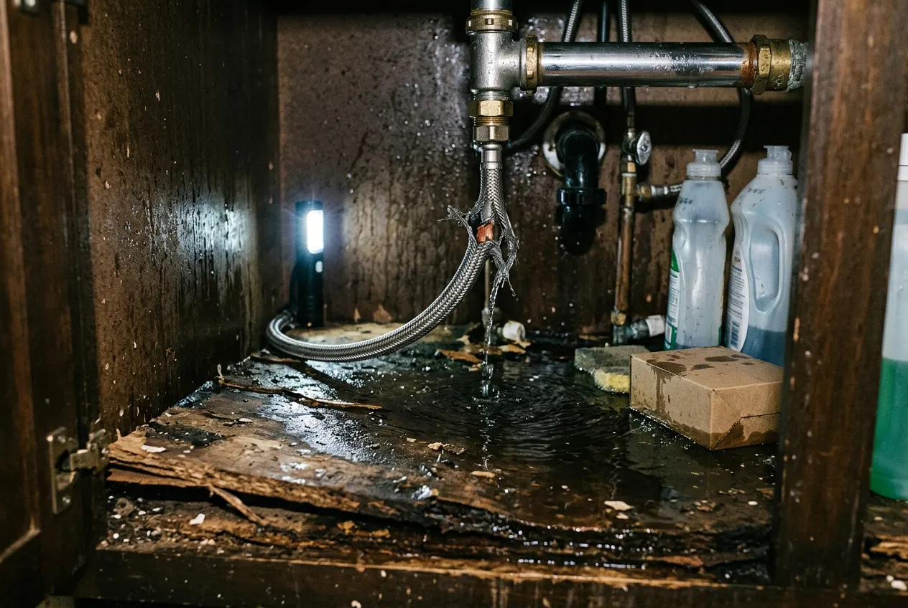

In short
- Stop the water and start drying first. The decision to file can wait a day; the drying can't.
- Get a mitigation price before you call your insurer, so you know whether the loss clears your deductible.
- Filed homeowners claims generally stay on your CLUE report for up to seven years.
- Once you do file, California regulations give your insurer 15 days to acknowledge the claim and 40 days from proof of claim to accept or deny it.
When water hits the floor, most people's first instinct is to call their insurance company. Sometimes that is exactly right. Sometimes it costs more than the leak. This guide walks through how to decide, in the order the decision actually happens.
This is general information, not legal or insurance advice. Your policy wording and your agent are the final word on your coverage.
First: stop the water and start drying
The claim decision can wait a day. The drying can't. Wet materials need to start drying within 24 to 48 hours to keep mold from taking hold, and your policy almost certainly requires you to take reasonable steps to prevent further damage. Stop the source, make the home safe, and get drying started. Our first-hour guide covers those steps.
Starting mitigation does not commit you to a claim. You can decide either way once you know what you are dealing with.
Get a real number before you call your insurer
The single most useful thing you can know is what the job will cost. A restoration company can walk the home, take moisture readings and give you a price for drying and any tear-out. Compare that number with your deductible:
- Well under your deductible: a claim pays you nothing and still goes on your record. Paying out of pocket is usually the better move.
- Close to your deductible: a claim pays little and still goes on your record. This is the gray zone; weigh the history question below.
- Well over your deductible, or the repair (rebuild) will add a lot more: this is what insurance is for. File.
Remember that drying is often only half the cost. If drywall, flooring or cabinets have to come out, the rebuild can cost as much as the mitigation or more.

IllustrativeUnderstand what a claim does to your record
Insurers share claims history through a database called CLUE (Comprehensive Loss Underwriting Exchange). State insurance regulators describe a CLUE report as generally holding up to seven years of home and auto claims. When you shop for a new policy or come up for renewal, insurers can see it.
A single paid water claim does not automatically mean a non-renewal or a big increase, but water losses are among the claims insurers watch most closely. Two in a short span gets much more attention.
You can request your own CLUE report from LexisNexis. Check it before you shop for insurance, and dispute anything that is wrong.
Check what your policy actually covers
Most homeowners policies cover water damage that is sudden and accidental, like a burst supply line or a failed water heater. They commonly exclude or limit:
- Gradual leaks that went on for weeks or months, like a slow drip under a sink or a failing shower pan.
- Flooding from surface water or rising water, which needs separate flood coverage.
- Sewer or drain backups, unless you added a water backup endorsement.
- Mold, which is often capped at a low sublimit.
How the damage happened matters as much as how big it is. Clear photos of the source, the age of the stains and moisture readings all help an adjuster see what really happened.
When filing is the clear choice
File when:
- The damage spreads across several rooms, reaches a second floor, or needs significant tear-out and rebuild.
- The water was contaminated (sewage, toilet overflow, floodwater), which raises the cost and the required scope.
- You will need to live elsewhere while the work is done. Many policies include additional living expenses.
- Someone else may be responsible, such as a neighbor's unit or a contractor's faulty work.
What California requires of your insurer once you file
California's Fair Claims Settlement Practices Regulations set deadlines insurers have to meet. In short:
- Within 15 calendar days of notice of your claim, the insurer must acknowledge it, give you the forms and instructions you need, and begin investigating (10 CCR § 2695.5(e)).
- Within 40 calendar days of receiving proof of claim, the insurer must accept or deny the claim, in whole or in part (10 CCR § 2695.7(b)). A denial has to be in writing and explain the reasons.
If an insurer misses these deadlines or you think a claim is being handled unfairly, you can contact the California Department of Insurance.
How we work either way
If you file, we document the loss the way adjusters want to see it: photo logs, moisture maps, equipment logs and daily drying readings, all visible to you in the job tracker. We can bill your carrier directly, and your deductible is your only out-of-pocket cost on a covered claim.
If you don't file, you get a written price before we start, with no surprise line items at the end.
Not sure which way to go? Request a visit and we will give you the number first. The decision is yours.
Frequently asked questions
Does calling my insurance company to ask a question count as a claim?
It can. Some insurers log a call about a specific loss even if you never file. If you only want general information, ask your agent a general question, or ask whether the call will be recorded as a loss before you describe the damage.
How long does a water damage claim stay on my record?
State insurance regulators describe CLUE reports as generally containing up to seven years of personal property claims history. You can request your own report from LexisNexis.
How fast does my insurer have to respond in California?
Under California's Fair Claims Settlement Practices Regulations, an insurer must acknowledge a claim, provide claim forms and begin its investigation within 15 calendar days of notice, and accept or deny the claim within 40 calendar days of receiving proof of claim.
Will Havok work with my insurance company?
Yes. We document the loss with photos, moisture maps and daily drying logs, and we can bill your carrier directly. If you decide not to file, we give you a written price before work starts.
Sources
- California Code of Regulations, Title 10, § 2695.5 (Cornell LII)
- California Code of Regulations, Title 10, § 2695.7 (Cornell LII)
- California Department of Insurance - Fair Claims Settlement Practices Regulations
- CFPB - LexisNexis C.L.U.E. consumer report
- Washington Office of the Insurance Commissioner - What a CLUE report contains
This article is general information, not legal, insurance or medical advice. Images are illustrative.